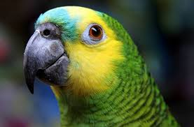
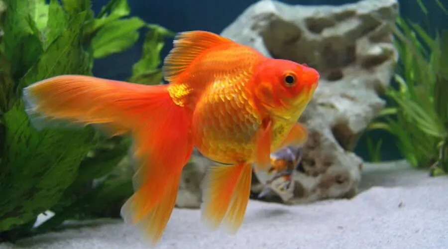
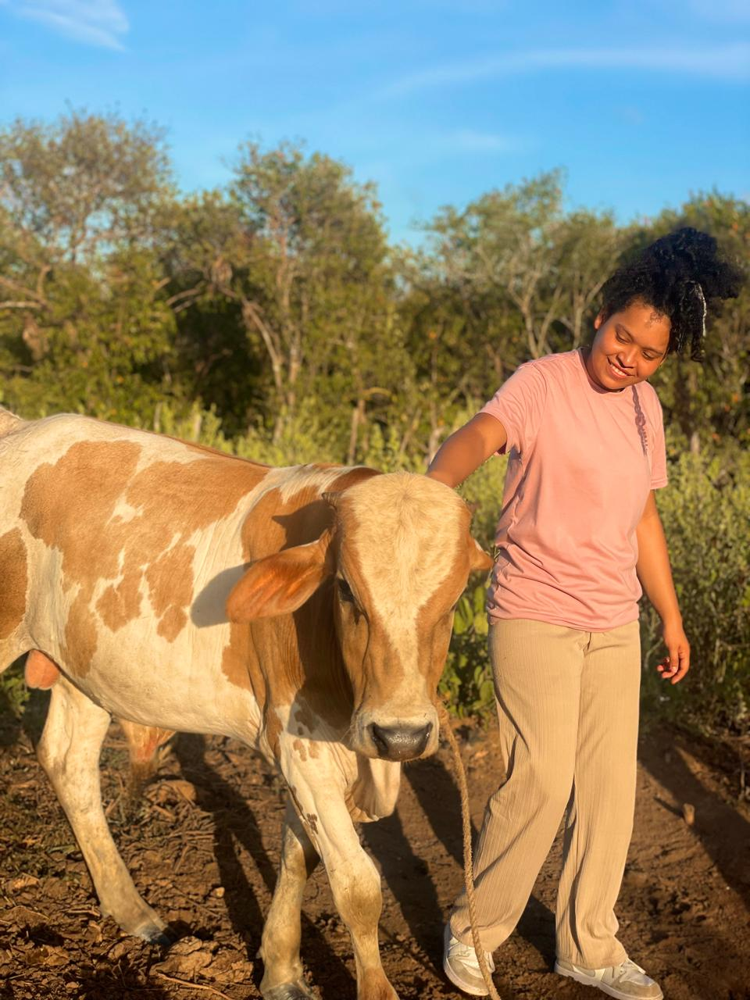
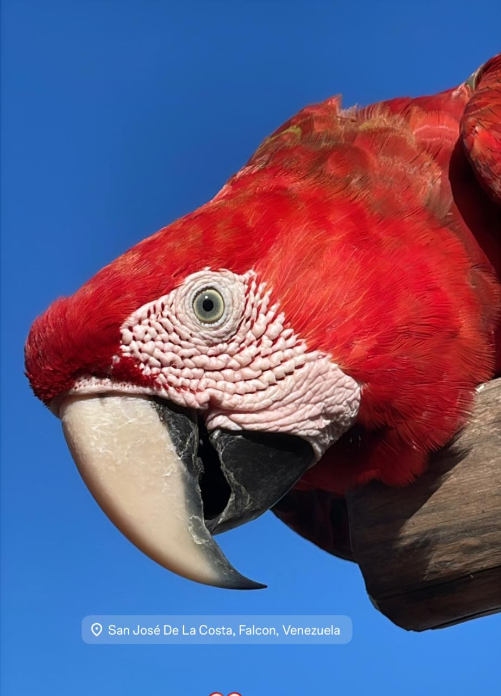
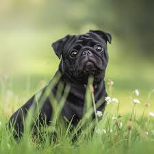

Loro
Mi lorita se llama Niña y se cree perro. Le encanta jugar y hacer ruidos graciosos.

Mi lorita se llama Niña y se cree perro. Le encanta jugar y hacer ruidos graciosos.

Mi perrito se llama Gollito Es muy juguetón y le encanta pasear por el parque.

Otra mascota adorable, es un pez Bailarina y su nombre es Moana.

Canela es una vaquica muy juguetona.

Mi guacamaya vive en la finca de mi familia, es muy traviesa y se llama Lola.

El se llama caramelito, y es el mejor amigo de Gollito.